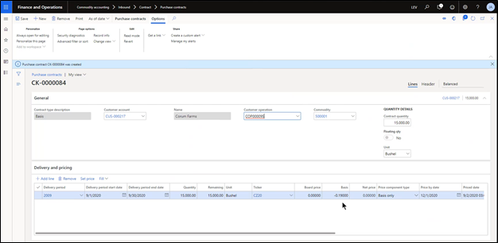

Grain - Inbound Processes
Overview
An overview of the inbound grain process beginning with contracts and working through settlements. The in-bound process will be used for anyone buying in a commodity.
Finance & Operations > Modules > Commodity Accounting
From the commodity accounting menu, the outbound process consists of:
- Contracts
- Offers
- Purchase contracts
- Storage agreements
- Contract expiration
- Open contracts
- Delivery
- Settlement
Contracts
Offers
Commodity Accounting > Inbound > Contract > Offers The Offers My view shows a list of open offers. Open offers can be filtered by Branch, Commodity and Executed offers. Executed Offers is a yes/no toggle button if flipped to “Yes” will show the contracts that have been filled with a purchase contract issued to the contract.
To create a new offer, click New.

A Create offer window will appear on the right-hand side. The Create offer fields include:
- Branch
- Offer date
- Offer type
- Notification - Before offer can be executed, the user needs to contact whoever created the offer and ask if they want the contract to be executed.
- Market offer - If the current market or bid at this location reaches offer level, the contract is executed automatically.
- Customer
- Commodity
- Contract type
- Delivery period
- Offer quantity
- Ticket default: Automatically defaults. The input is reflective of selected Delivery period.
- Board price
- Basis
- Net price
- Expiration date
- FOB location
- Notes
Click Create. A review of the contract is then generated. Click Save. Created offers can be removed.
Purchase Contracts
The Create purchase contract is generated by clicking New and opening an offer. A Create offer window will appear on the right-hand side. This is the same Create purchase contract window shown in the Create Contracts section.
Click Create. The system will show the created Purchase contract.
The Line view includes General and Delivery and pricing information. The General view outlines the line detail part of the contract capturing the contract information currently in the system. The Customer operation field is a farm field type development. The Delivery and pricing information view show the delivery information.

The Header view shows additional detail:
- General contract information
- Includes Direct Ship information
- Contract dates and quantities
- Once tickets are applied to the contract, the system begins tracking what has been delivered.
- Part of a commodity can also be canceled.
- Sent date: The ability to track whether the contract has been signed
- Date returned: The date when the contract was returned
- Contract expires: The date when the contract expires. There is a contract expiration program track and get rid of contracts that have expired.
- Discounts, fees and freight
- The “Use discount schedule in place at time of delivery” is a yes/no toggle button with the option to have commodity and branch set up with a default discount schedule. In the setup page, there is a setup flag to use a discount schedule which would default to every contract or scale ticket.
- Fee schedule: Storage charges or assessments.
- Market to market adjustment: if the user is bringing contracts to market and you want to bring them back to market at one location, you can use a basis or freight adjustment to add/subtract to price to get the right calculation of bringing contracts to market.
- Freight included in basis: information of basis level of how much was freight.
- Addresses
- Multiple addresses to use on contract. These addresses can be overwritten
- Ship from name
- Ship to name: Defaults to branch previously entered in
- FOB name: Where ownership changes
- Multiple addresses to use on contract. These addresses can be overwritten
- Miscellaneous details
- Can identify who in your company created contract. If a Broker was used, this can be identified along with the Broker commission rate. The commission rate is not processed and is just for informational purposes. It does not create a payable.
- Hedge commodity
- The commodity will default in.
- Additional hedge commodities can be entered. Can get long/short to run by hedge commodity.

Pricing of a Contract
Commodity > Inbound > Contract > Purchase contracts
The Delivery and Pricing view is available under the “Line” My view.
- To set a price, highlight the delivery period. Click on Set price. The Contract pricing window will appear on the right-hand side.
- The user can change the Price quantity, Board price, and Basis to match what should be on the contract. The Net price is calculated from Board Price, subtracted Basis, and gave Net price.
- Click Create.
- A new delivery period line is created. Throughout system, you will see same contract number, but it will have two delivery period lines showing up.
Within the contract entry, additional functionality includes:
- View:
- Scale tickets and load requests issued against a contract, along with load orders tied to a contract.
- Generate:
- Pricing confirmation. This can be printed.
- Fill:
- Ability to fill at market price or contract price.
- Market price:
- Takes quantity against current market. The system calculates gain/loss to create either a payable or receivable
- Contract price:
- Takes quantity against current contract price. There is no gain or losses.
- Market price:
- Ability to fill at market price or contract price.
Delivery Process on In-bound Grain
Commodity accounting > Inbound > Delivery
Delivery Process on in-bound grain includes:
- Inbound scale tickets
- Delivery sheets
- Inbound scale ticket application
- Unit trains
Inbound Scale Tickets
Commodity accounting > Inbound > Delivery > Inbound scale tickets
Most of the inbound scale tickets will be imported in from scale a scale interface. But you do have the ability to add new scale tickets or edit existing scale tickets that have been imported.
To create a new scale ticket, click on New.
A Create scale ticket window will appear on the right-hand side.
- Ticket type
- Commodity
- Branch
- Warehouse
- Customer account
- Name
- Ticket date: this is a user field and can be overridden
- Customer operation: There can be multiple operations for a customer. Must choose one. A customer operation is required.
- Customer site: This field is not required but can choose for tracking purposes.
- Split Group: Will default in with the customer operation. This can be overridden.
Click Create.
The below image shows a newly created inbound scale ticket.
Additional information and categories one can enter attached to a scale ticket.
- Scale ticket split details: If there were multiple splits, the system would preview the split they would be receiving.
- Weights: The system calculates net weight. This is a toggle on/off button (defaults Driver to on). The user can select scale operation and grader if they want the information recorded on the ticket.
- Date/Time: Can be viewed on the printed ticket.
- Notes: There are two types of notes: External and Internal. External will print on scale ticket.
- Grade factors: Grade factors are set up in the system and assigned to the commodity. The sequence they show up in the table is user defined. There is the ability for the moisture and test weight depending on equipment person has but can import moisture and test weight (TW).
- User can enter other discount factors as well. Those are used to defer back to the discount schedules that are attached to any contract or storage agreement user has and calculate any premium or charges that are due based off those discounts.
- Transportation Details: This is not a required entry but can be provided. It is a way to identify the driver delivering the commodity for informational purposes and when the truck comes back empty.
- The Unit number is primary used in rail shipments can add and group this ticket with others. Sometimes previously hauled commodity is a required field so that there wasn’t hazardous material hauled prior to commodity.
The next step is to Post to Inventory so all commodity received will show up in inventory to track and update DPR for inventory amounts.
DPR: daily position report.
After the ticket is posted, it is locked in and ready to be used in other parts of the system. This concludes the inbound scale ticket option.
Inbound scale ticket application process
The Inbound scale ticket application process takes scale tickets received and provides the user the option to determine how the scale tickets will be used.

- The contract number can be changed.
- Inbound scale ticket auto-apply:
- The user can set up a sequence in the system to auto apply on each contract. e.g. If you have it set up to sequence if you want your first application contract, second agreement storage agreement. The system will automatically apply your scale ticket or a portion of it to an existing purchase contract or to an existing storage agreement based on the sequences set up on your auto-apply functionality.
- Inbound scale ticket un-apply
- Ability to unassign scale tickets from contracts
- Can select a scale ticket not previously assigned to a contract (if let’s say it was un-applied as mentioned above) the user can click on the scale ticket and allocate it to a purchase contract or a storage agreement. Or you can do the full amount or part of a contract.
This is what the inbound scale ticket application program will do to get commodities moved to the specific obligations a customer may have.
Delivery Sheets
Delivery Sheets is a way to group multiple tickets together for same commodity and same customer. You can also use delivery sheet to calculate average grades. It is a delivery sheet to group tickets together and process them as a group instead of individually.
The system automatically assigns Delivery Sheet number. If you want to see completed sheets, you can click on the Show Completed toggle button (Yes/No). You can also show the Voided delivery sheets as well (toggle button).
To create a new delivery sheet, click New.
The Create delivery sheet window will appear on the right-hand side of the window.

- Branch: Defaults to last branch used
- Date: Defaults to current date
- Customer account: Enter account name or number
- Commodity: Choose commodity
- Customer operation: Choose the customer operation
- Customer Site: Choose customer site
- Split group: The system assigns a split group, but this can be overridden
- Estimated start date: not required fields. Some customers use a planning process.
- Estimated delivery quantity: “above” helps with planning purposes.
Click Create. A new delivery sheet will be created and open in the main window.

Under the Delivery sheet ownership splits section:
- All tickets applied to the delivery sheet will be assigned to the one account. You can have multiple accounts with different percentages applied and as the ability to complete splits.
- Can choose default disposition. Each time the user applies a ticket to the delivery sheet, it will be applied to that specific contract. The user can choose what they intend to do with the storage agreement.
- There is the option of the tickets to be applied when added to the delivery sheet.
Delivery sheet completion details:
- Details the splits and dispositions of the delivery sheet
After these sections are reviewed and filled out, the user can complete the delivery sheet. This finishes the process and lock down the calculations. The user cannot settle any of the tickets delivered until it is completed. The tickets will not show up as available to settle until the complete function has been done.
Unit Trains
If unit trains are received within a facility, this is a simple program to create a Unit train number, which is an alphanumeric field. After creating a number, click save. These numbers are now available within the system to be used and attached to a scale ticket.
Settlement
Commodity accounting > Inbound > Settlement
- Settlement requests
- Settlement payments
- Discounts, fees and charging invoicing
- Settle options with grower
- Warehouse receipts
- Settlement sheet reprint
Settlement Requests
Commodity accounting > Inbound > Settlement > Settlement requests
Settlement request window shows all settlement requests with a status of either opened, invoiced, or paid.
To create new settlement request, click New.
Select a customer, commodity, and branch. The disposition is a drop-down field asking the location of the contracts (Stored, Price later, Priced contract). After choosing, click Next.
If chosen Priced Contract, the system shows all the scale tickets that have been applied to a priced contract that have not been settled yet. These are available to be settled. After choosing the contracts to be settled, click Next. The system provides a Preliminary summary with the contract number, delivery period, end price, settled quantity, and settled amount (gross dollar amount). Discounts, fees and charges would be summarized as well in the bottom quadrant. Click Next.
The system will take the user to the Remittance screen. This screen summarizes the remittance portion.
The Deferred payment function is utilized frequently. This is the option to lock in a commodity price and selling the commodity in a future date. The Requested payment date can change to reflect the future date. The Deferred charge code and Deferred Terms code are utilized along with the deferred payment option. The user can choose to have a premium on the deferred payment.
Add/Split Payments is another function with the ability to issue additional checks.
Click Next. The system is now ready to issue the check(s). The Settlement request summary provides a summary of the Settlement Request. Click Finish. From there, the user can go to Settlement Payment.
Settlement and Payment Process
Settlement and Payment Process is a two-step process:
- Confirm
- Confirm and Pay
After the user selects one of the above options (self-explanatory), the system will validate the settlement and post in journal.
Discount, fees, and charges invoicing.
Functionality not completed as of October 2020.
Warehouse receipt
This is a legal tender document. If the document is listed as a negotiable warehouse receipt, it is a legal tender. A non-negotiable document does not have the same legal tender but has same protection level.
To issue a new warehouse receipt, Click New.
The Create warehouse receipt will appear on the right-hand side in a new window.

After completing the warehouse receipt, the user would choose a Storage agreement. Click Save. A warehouse receipt will then be issued. This is another form of storage for the grower.
Settle options with grower
Functionality not completed as of October 2020.
Settle sheet reprint
This is the option to be able to reprint a settlement sheet.
The Grain Outbound Processes can be found under Grain Outbound Processes